普日微信企业号用户操作手册
作者：王贺
版权所有©沈阳普日软件技术有限公司
目录
关注企业微信号
介绍
2016年4月初微信对企业号的关注方式进行了调整，详情如下：
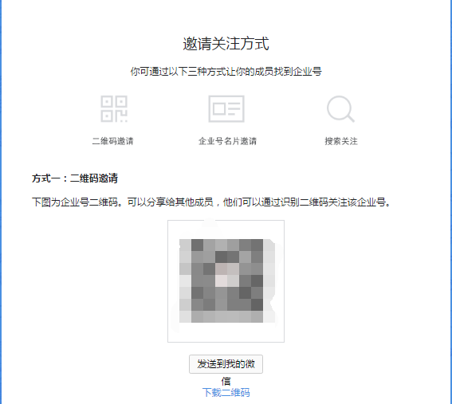
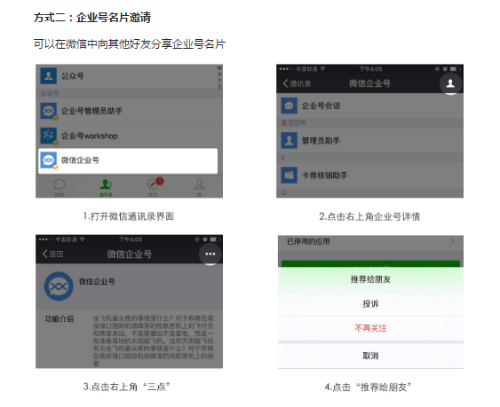
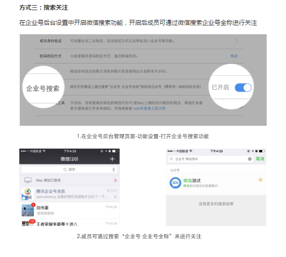
每一位需要使用微信移动端的企业成员都需要关注企业微信号。只有当成员关注企业微信号之后才能够正常使用相应的功能，例如：待办事项、查询列表等操作。我们所推荐的关注方式为以下两种：
一、通过企业协同管理平台同步到微信企业号通讯录
最常用也是最主要的途径是：通过操作企业内部协同管理平台，在进行成员信息录入的时候直接与企业微信号中的通讯录同步，并发送给录入成员关注企业微信号的邀请（注：此邀请每周只能邀请一次，因此如果企业成员在没有关注企业微信号时将邀请关注的推送删除了，可以使用第二种方式进行关注。）。此种场景不需要用户再进行验证，只需要点开推送的邀请关注信息并关注企业微信号即可。而对于其他一些对于企业成员的操作也需要与微信通讯录同步，详情请参照【通过企业协同管理平台同步到微信企业号通讯录 】
二、通过扫码关注企业微信号
企业微信号的二维码可以通过企业微信号的管理端查看到。管理员登录后再控制面板点击【设置】，然后在右侧的【基本信息】中可以看到【二维码】，下载到本地，可以分享给需要关注的企业成员或者请需要关注的企业成员扫码直接关注。这种关注方式需要注意的一点是：管理员需要在管理段先添加该成员的信息，尤其是手机号或者邮箱，因为企业成员扫码关注时需要进行身份验证，而验证的凭证就是手机号或者邮箱！而关于【账号】信息的填写，则需要管理员查询DB中的 SECURITY_USERS_C 表中的成员对应的ID字段。参照【通过企业协同管理平台同步到微信企业号通讯录 】回到首页
通过企业协同管理平台同步到微信企业号通讯录
介绍
企业微信号的通讯录是企业与企业成员交互的重要工具和依赖，企业微信号的通讯录有一个企业微信号中的成员唯一标识，即人员通讯录中的【账号】信息，它支持对多64位字节的字符串，这个字段是与企业成员交互的凭证，因此必须保证该字段的唯一性。目前已经将与微信通讯录的同步操作集成在医院协同管理平台中了，在进行人员信息管理时会将相应的操作同步到微信通讯录中。
PC端与微信端同步
因为医院协同管理平台的人事管理员在对人事信息进行维护时可能会出现与微信服务器之间的通讯障碍或者没有能够与微信通讯录同步成功的情况存在。因此在保存维护后的人员信息时可能会有错误提示，这种情况出现的概率非常低，但是如果出现了，管理员需要参照以下的引导作出相应的处理：
PC端与微信端同步失败会提示：“保存成功！微信端同步失败，请联系系统管理员！”
1.用户管理中
点击"新增院内人员"按钮，提示该错误信息，管理员需要检查微信端网络情况，并登陆微信公众管理平台手动在通讯录中添加该用户的微信信息，新增用户的账号信息需要管理员查询数据库中的（SECURITY_USERS_C 表中的成员对应的ID字段）。若“邀请关注”按钮可点击，则点击邀请该用户关注。
2.用户管理中
点击"删除"按钮，提示该错误信息，管理员需要检查微信端网络情况，并登陆微信公众管理平台手动删除通讯录中该用户的微信信息。
3.员工信息中
- 3.1 点击”修改"按钮，微信号从无到有，提示该错误信息，管理员需要检查微信端网络情况，登陆微信公众管理平台手动在通讯录中添加微信号，若“邀请关注”按钮可点击，则点击邀请该用户关注员工信息中。
- 3.2点击"修改"按钮，微信号从有到有，提示该错误信息，请多次尝试修改仍未成功，管理员需要检查网络状态或更改微信号重新提交员工信息中。
- 3.3点击"修改"按钮，微信号从有到无，提示该错误信息，管理员需要检查微信端网络情况，登陆微信公众管理平台手动在通讯录中删除微信号。
4.录聘管理中
- 4.1 点击"离职人员录聘"按钮，提示该错误信息，管理员需要检查微信端网络情况，并登录微信公众管理平台，设置该用户为启用，若“邀请关注”按钮可点击，则点击邀请该用户关注。
- 4.2 点击"返聘"按钮，提示该错误信息，请检查微信端网络情况，并登录微信公众管理平台，设置该用户为启用，若“邀请关注”按钮可点击，则点击邀请该用户关注。
5.离院管理中
点击“新增”按钮，提示该错误信息，管理员需要检查微信端网络情况，并登录微信公众管理平台，设置该用户为禁用。
回到首页
登录 | 切换用户
说明
如果企业成员关注企业号之后，就可以看到对应的应用。如图所示：
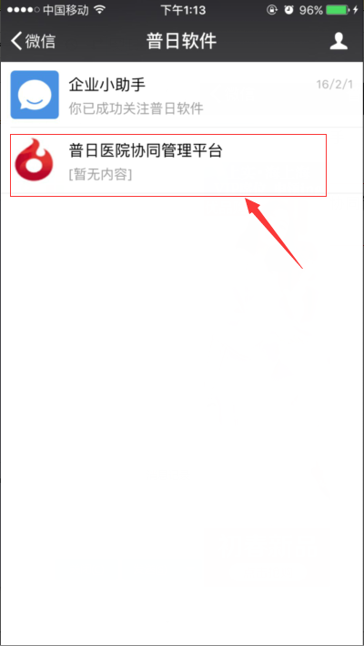
点击医院协同管理平台后，会进入到应用的主页面，如图所示：
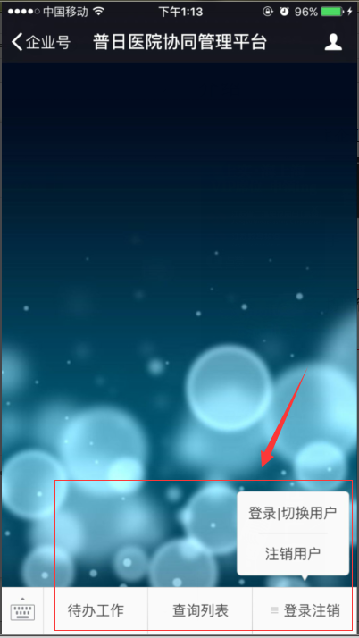
在应用的主页面中，能够看到操作的菜单共分为【待办工作】、【查询列表】、【登录注销】三个一级菜单，其中【登录注销】包含【登录|切换用户】和【注销用户】两个二级菜单。
如果企业成员没有登录过，则不能进行相应的操作，例如，用户没有登录过，此时点击【待办工作】，会跳转到登录页面。
当用户输入正确的用户名和密码（用户名和密码为PC端协同管理平台的用户名和密码相同）。
验证通过之后用户就可以进行相关的操作了，否则会提示用户输入的用户名或者密码错误并停留在登录页面。
微信端的用法与安卓APP基本一致！
回到首页
注销用户
说明
因为微信端采用的是用户登录信息长期有效，因此当用户不在需要使用微信端的时候，可以出于安全方面考虑选择注销当前用户。
这样其他人即使得到手机也不能进行相应的操作！
具体操作流程如下：点击【登录注销】一级菜单->点击【注销用户】按钮。注销成功时，如图所示：
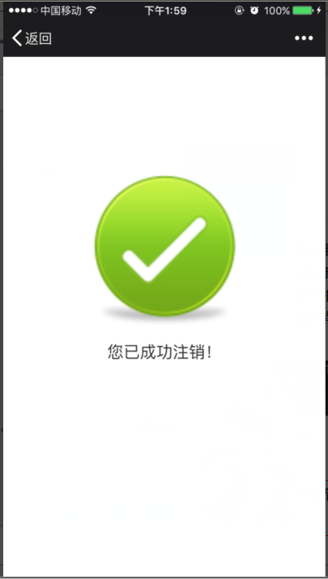
回到首页
待办工作
介绍
在应用的主页面点击【待办工作】进入到待办列表页面，当前登录的用户所有的待办工作都将在这个页面进行显示。
最上方显示了待办工作的数量，每个待办工作由【详情】、【签收】、【办理】、【退回】四个部分组成。
【详情】显示的是当前待办工作的概况描述。
【签收】和【退回】是相互对立的操作，即待办工作被签收后才能够选择退回操作；相应的待办工作退回后才能被签收。如果某个待办工作被签收了，那么该待办工作将不能被他人签收。
【办理】是对当前待办工作进行办理操作！
待办列表页面：
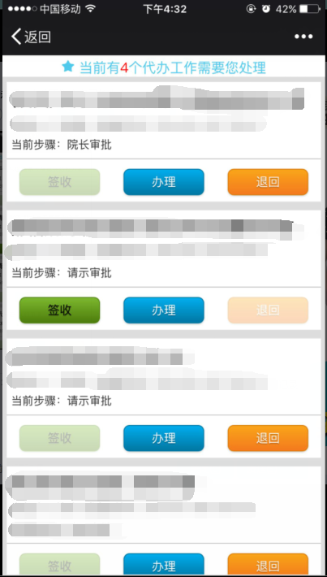
需要注意的是：目前微信端的有些待办工作不能够处理，需要到PC端进行处理。这种情况会在办理时对用户进行提示，如图所示：
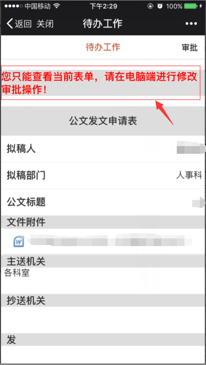
回到首页
查询列表
介绍
在应用的主页面点击【查询列表】进入查询列表页面。
当前登录的用户所有能够查询的模块都将在这个页面进行显示。
点击每个查询模块区域进入的是该查询功能的列表页面或者子模块列表页面。
当进入某个查询模块的查询列表页面时，可以点击右上角的【查询条件】可以设置查询条件用来检索用户所需要的信息。
查询列表页如图：
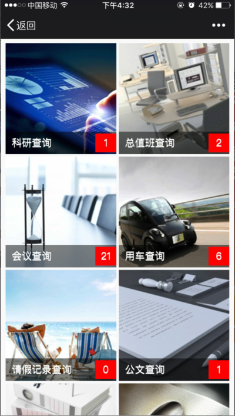
回到首页
推送相关
介绍
当用户在OA系统上进行相关的操作，例如：发送邮件，发起申请等等。
相应的收件人或者审批领导会收到相关的推送，入下图所示:
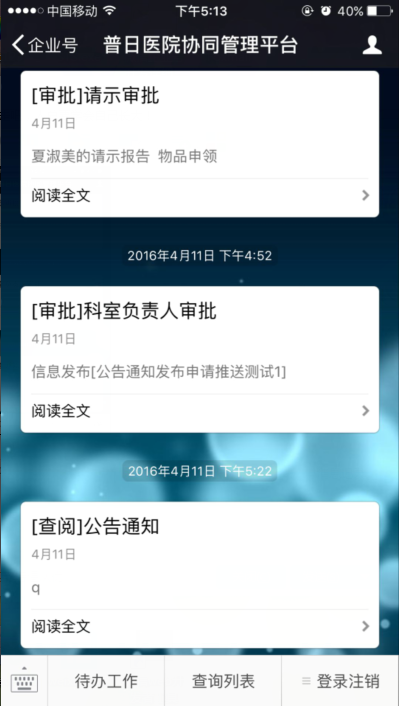
需要注意的是：推送的接收人必须关注企业号，否则不能收到推送消息
回到首页
附件下载
介绍
在各个详细页面都有可能存在一个或者多个附件的情况，用户点击各个附件就能够下载并查看附件。
但是需要注意的是，目前只能打开类似word,excel,txt,图片等常用办公软件类的文件。
像以exe或者rar为后缀的附件或者文件夹等形式的附件不能够正常打开！
在表现方式上，IOS系统与Android系统也是不一样的。
下面分别根据这两种情况进行说明：
IOS系统：
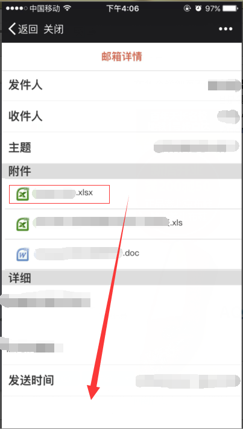
如果用户想通过其他软件打开附件，可以做以下操作：
首先点击右上角的三个点，然后选择【在Safari中打开】，如图所示：
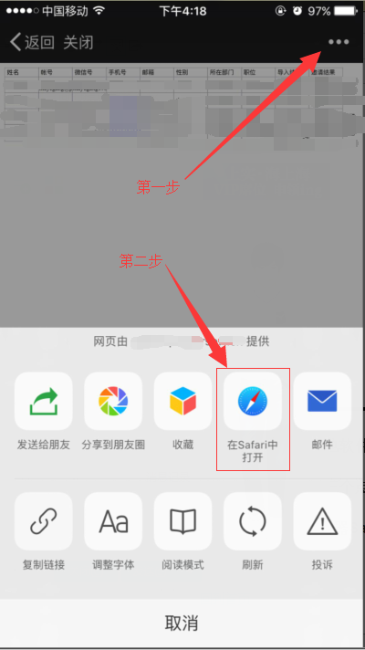
然后在IOS自带浏览器Safari中，可以选择打开方式！
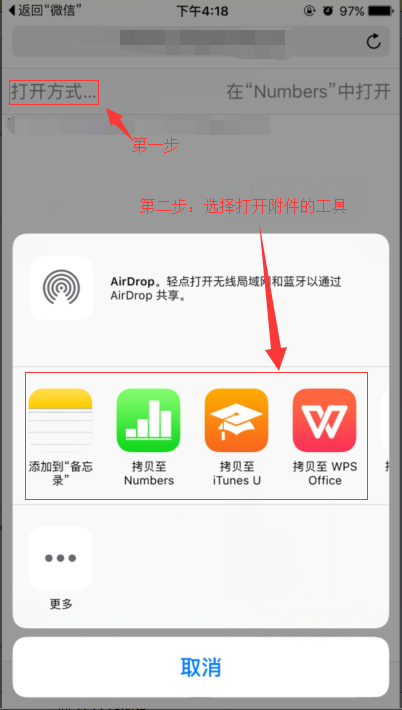
回到首页
Android系统：
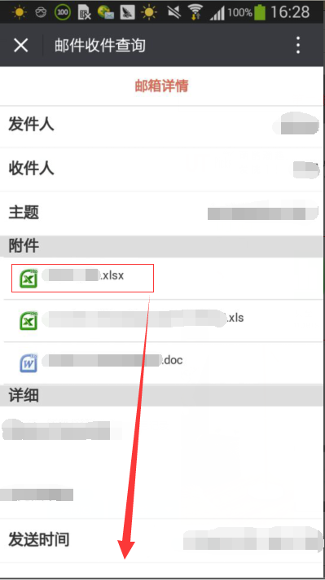
选择打开方式，尽量使用Android自带的浏览器并选择仅一次！
如果用户选择了总是，一旦所选择的方式打开附件有问题，需要手动在手机上将【总是】的选项去掉，不同的手机处理的方式不同！！！所以这里建议使用安卓自带的浏览器！
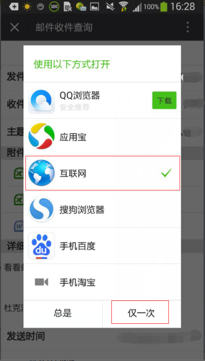
选择下载列表
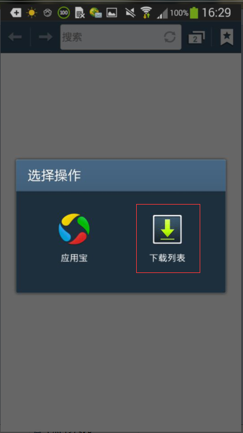
找到下载的文件并点击

选择合适的工具打开附件
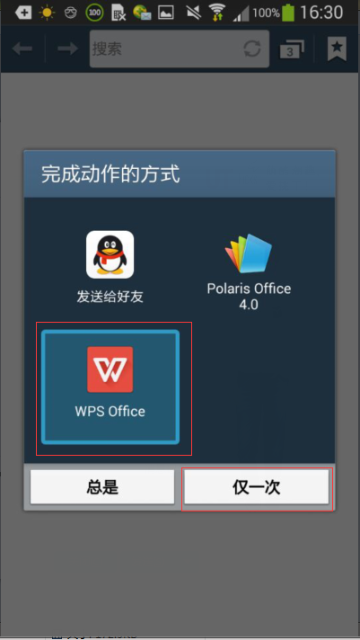
回到首页
常见问题 FAQ
常见问题解答
-
问题：点击【待办工作】或者【查询列表】菜单后，页面一直是转圈的等待状态？解答：这种情况可能是由于通信出错，此时关掉页面，重新点击一下【待办工作】或者【查询列表】菜单。
-
问题：IOS系统中，点击【待办工作】或者【查询列表】菜单后，显示空白页面或者提示【系统内部错误！请联系管理员!】？解答：点击页面右上角的三个点，然后点击【刷新】。
-
问题：IOS系统中，页面显示不正确，我在查询页面无法点击【查询条件】或者在待办工作列表页面看不到最上面的待办工作条数或者在列表页面下拉获取不到更多数据或者在登录页面点击【登录】按钮没有反应？解答：这种现象一般是由于页面静态资源没有加载完全，解决方法：双击home键，关掉微信，然后重新开启微信。
-
问题：Andriod系统中，由于之前选择错了附件的打开方式，并且选择了【总是】，现在附件不能正常打开？解答：每种Android机器都有自己的处理方法，在这里我列举一下三星手机的处理方式，其他手机类型可以参照该方法进行处理。参考地址：安卓系统取消程序默认打开方式方法及步骤
-
问题：虽然项目已经发布新的版本，但是我的微信还显示之前的页面信息？如何清除微信的缓存文件？解答：微信中点击【我】->【设置】->【通用】->【清理微信存储空间】
-
问题：我接收不到推送消息？解答：联系管理员查看微信通讯录中的信息是否正确。
回到首页